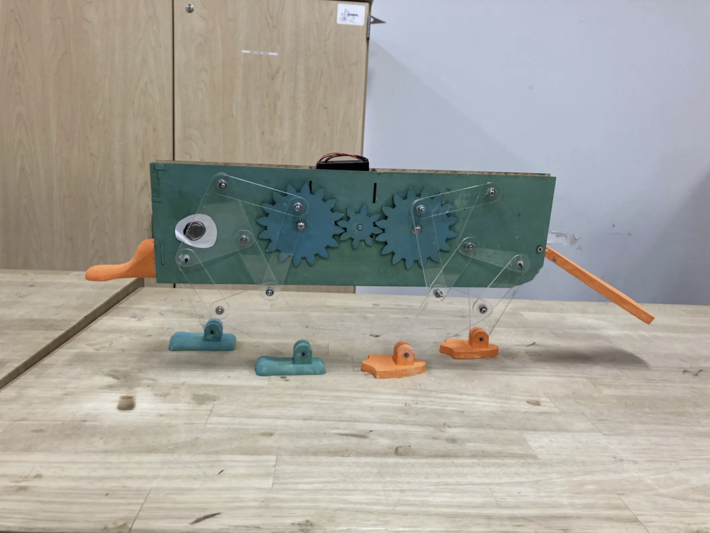
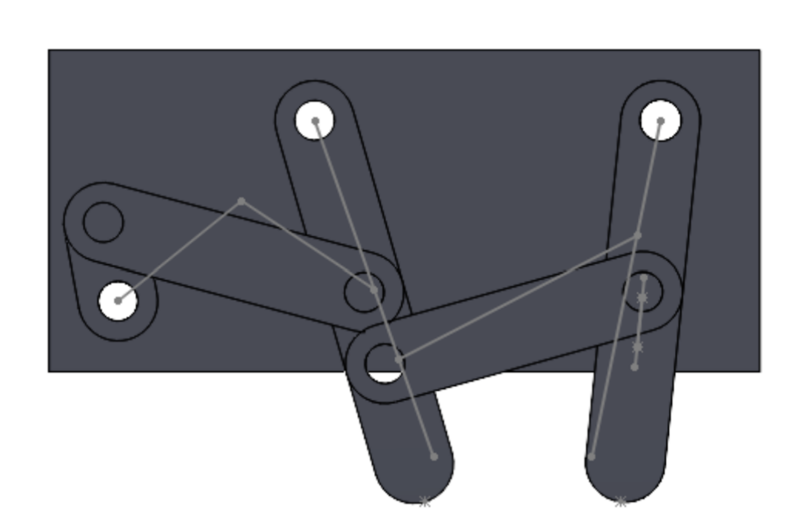
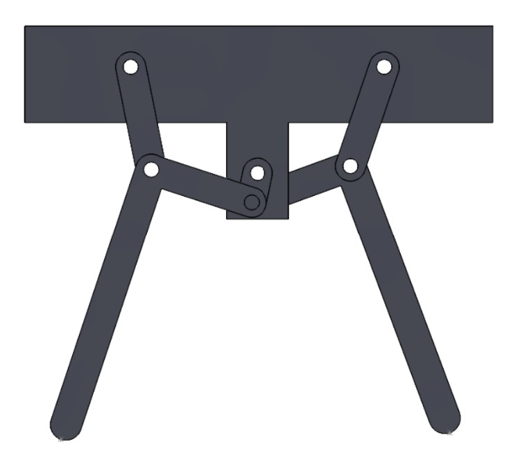
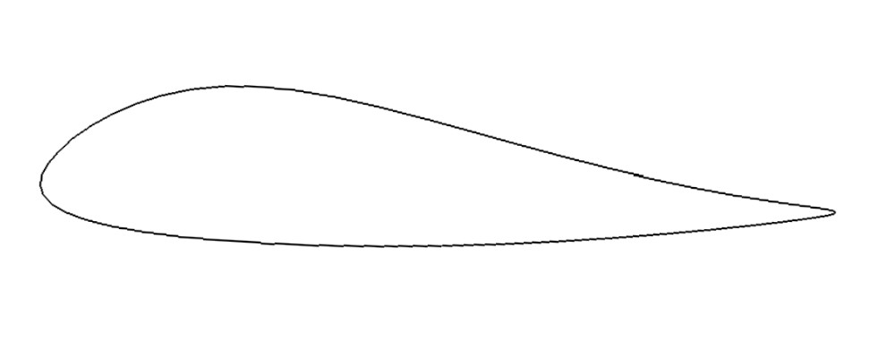
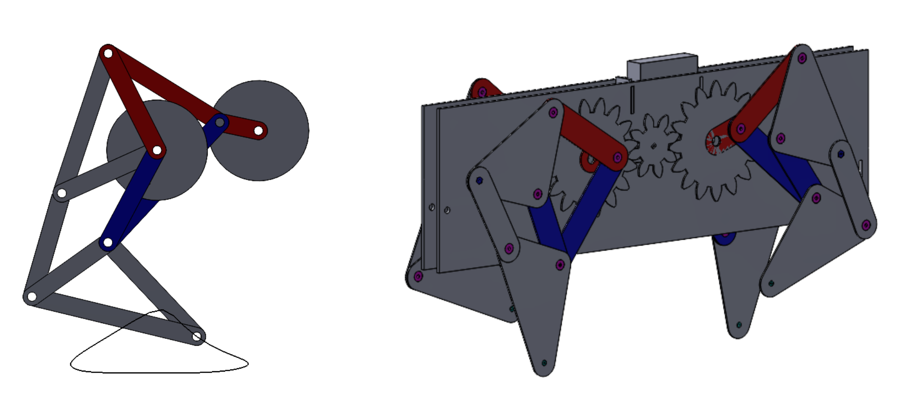
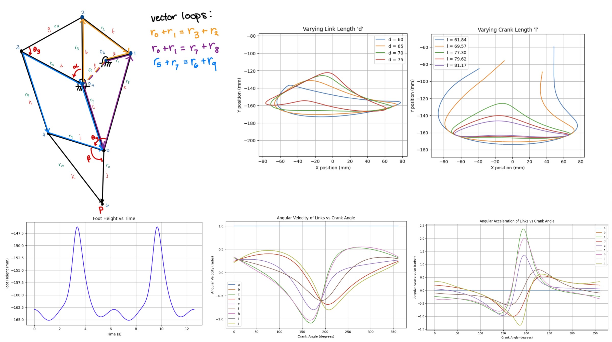
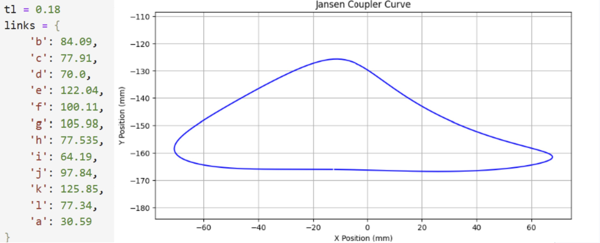

The leg mechanism was synthesized to achieve a passively stable gait using a single actuator. Stability was evaluated through position, velocity, and acceleration of the foot through the gait cycle. Key constraints included:
All these factors were plotted in Python and optimized for. A prototype was made to verify these analyses.
First I created some linkages that would generate two out of phase paths, using coupler curves and cognates. I analyzed the paths generated by these linkages. My initial finalized linkage was a five bar created from two four bars that share a driver crank. This was made by optimizing coupler curve for a crank rocker found in the H.K. Atlas (page 127).



While most optimized out of the linkages I designed, it was still unideal, especially when it came to smooth landing and take off. The foot slides or digs into the ground rather than moving cleanly forward. The foot also spends less time on the ground than in the air. Thus, I read literature on leg locomotion and found the Jansen linkage.
After I switched to the Jansen linkage, I optimized geometry via Python kinematic analysis. I tuned link lengths to increase duty factor, flatten stance phase, and reduce acceleration spikes

I solved multi-loop linkage kinematics using the vector loop method to compute foot position, angular velocity, and angular acceleration, which was then used to simulate gait timing, stability, smoothness. I differentiated loop equations to obtain full dynamic profiles of all links. Through my test iterations in Python, I found that the length of link d and the crank a had the most significant impact on foot trajectory.

From this, I determined the final lengths of each link.

A SolidWorks motion simulation confirmed correct four-leg coordination.
The final physical prototype was able to walk but was not stable. This was largely due to structural flexibility in the thin linkages and how thin the entire quadrupedal structure was. While forward–backward center of mass motion was addressed in the synthesis, no constraints were imposed for side-to-side stability, causing the robot to tip unless the feet were carefully aligned. It demonstrated that linkage-level optimization alone is insufficient without full-body dynamics. Future work could model the full-body with gravitational forces and mass distribution to minimize vertical loading and center of mass movement.
The most important takeaways were that mechanical design can encode control behavior passively, that foot trajectory design is critical for stability, there is a tradeoff between kinematic performance and dynamic smoothness, and that real-world systems require structural + dynamic + kinematic integration
Mechanism design • Linkage synthesis • Kinematic analysis • Vector loop modeling • MATLAB/Python simulation • Design optimization • CAD and Motion Simulation (SolidWorks) • Dynamic analysis • Rapid prototyping • Mechanical system integration
Email: jennifersili@berkeley.edu
LinkedIn: linkedin.com/in/jennifersili